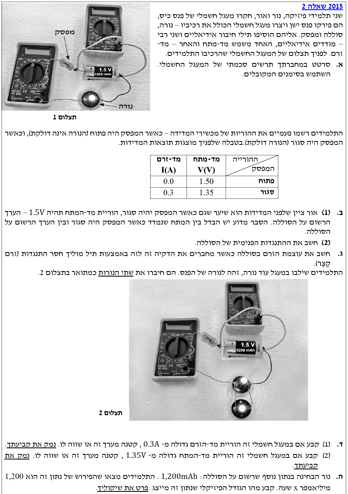

פתרון מלא: בגרות פיזיקה 2015
חשמל - שאלה 2
בשאלה זו אנו מנתחים מעגל חשמלי הכולל מקור מתח (סוללה) עם התנגדות פנימית, מכשירי מדידה אידיאליים, ונורות. נלמד על ההבדל בין כוח אלקטרו-מניע (כא"מ) למתח הדקים, וכיצד שינויים במעגל משפיעים על הזרם והמתח.
עודכן:
--- --:--:--

[תמונת השאלה המקורית]
לא נמצאה תמונה בשם question-image.png באותה תיקייה.
מה נתון:
על פי התצלום והתיאור בשאלה, יש לנו רכיבים המחוברים באופן הבא:
- סוללה בעלת כא"מ מוגדר, וסביר להניח שיש לה התנגדות פנימית.
- מד-מתח (וולטמטר) המחובר במקביל ישירות להדקי הסוללה.
- מפסק, נורה, ומד-זרם (אמפרמטר) המחוברים כולם בטור אל הסוללה.
- מכשירי המדידה (מד-מתח ומד-זרם) הם אידיאליים.
מה מחפשים:
שרטוט סכמתי של המעגל החשמלי תוך שימוש בסימונים מקובלים.
עקרונות בשימוש:
עיקרון בניית מעגלים:
- מד-זרם אידיאלי מחובר תמיד בטור ומהווה "קצר" (התנגדות אפס).
- מד-מתח אידיאלי מחובר תמיד במקביל ומהווה "נתק" (התנגדות אינסופית).
פתרון צעד-אחר-צעד:
להלן השרטוט של המעגל החשמלי המתואר בתצלום:
ראה שרטוט מעל. הסוללה מיוצגת עם מקור כא"מ והתנגדות פנימית בטור אליו. הוולטמטר מחובר במקביל להדקיה.
טיפ מורה: חשוב לשים לב כי מד המתח מחובר להדקי הסוללה (כלומר לפני המפסק). לכן, גם כאשר המפסק פתוח ואין זרם במעגל החיצוני, מד המתח סוגר מעגל פנימי קטן עם הסוללה. מכיוון שמד מתח אידיאלי מהווה נתק (התנגדות אינסופית), זרם אינו זורם, אך הוא עדיין "מרגיש" את פוטנציאל ההדקים.
מה נתון:
על פי הטבלה:
- כאשר המפסק פתוח: הזרם הוא \( I_1 = 0 \text{ A} \) ומתח ההדקים הוא \( V_1 = 1.50 \text{ V} \).
- כאשר המפסק סגור: הזרם הוא \( I_2 = 0.3 \text{ A} \) ומתח ההדקים יורד ל- \( V_2 = 1.35 \text{ V} \).
מה מחפשים:
להסביר מדוע קיים הבדל בין המתח הנמדד בשני המצבים (מפסק פתוח ומפסק סגור), ומדוע הערך הנמדד במצב סגור קטן מהערך הרשום על הסוללה (1.5V).
נוסחאות בשימוש:
\( V_{ab} = \varepsilon - I r \)
פתרון צעד-אחר-צעד:
מצב מפסק פתוח: במצב זה המעגל מנותק, לכן הזרם הכולל הוא אפס (\( I = 0 \)). לפי משוואת מתח ההדקים:
\[ V_{ab} = \varepsilon - 0 \cdot r = \varepsilon \]
לכן, הוריית מד המתח במצב זה היא בדיוק הכא"מ של הסוללה. משמע, הכא"מ הוא \( \varepsilon = 1.50 \text{ V} \). זהו גם הערך הרשום עליה.
מצב מפסק סגור: במצב זה המעגל סגור וזורם בו זרם \( I = 0.3 \text{ A} \). מכיוון שלסוללה יש התנגדות פנימית \( r \), מתרחשת "נפילת מתח" בתוך הסוללה עצמה שגודלה \( I \cdot r \). לכן, מתח ההדקים הנמדד קטן מהכא"מ:
\[ V_{ab} = \varepsilon - I \cdot r \]
המתח הזמין לשאר חלקי המעגל החיצוני (מתח ההדקים) יהיה קטן מהכא"מ בשל איבוד אנרגיה על ההתנגדות הפנימית.
ההבדל נובע מההתנגדות הפנימית של הסוללה. במפסק פתוח אין זרם ולכן נמדד הכא"מ בשלמותו. במפסק סגור זורם זרם, ונוצרת נפילת מתח פנימית על ההתנגדות הפנימית, כך שמתח ההדקים קטן מהכא"מ.
טיפ מורה: אנלוגיה מצוינת היא צינור מים עם פילטר פנימי שנסתם קצת. כשהברז סגור (מפסק פתוח), מד הלחץ יראה את הלחץ המלא של משאבת המים הראשי. אך ברגע שנפתח את הברז ומים יתחילו לזרום (זרם חשמלי), חלק מהלחץ יאבד כבר על הפילטר בתוך המערכת (התנגדות פנימית), ולכן הלחץ ביציאה לצינור ירד.
מה נתון:
מהסעיף הקודם ומהטבלה יש לנו את הנתונים הבאים:
- כא"מ הסוללה: \( \varepsilon = 1.50 \text{ V} \)
- זרם במעגל במצב סגור: \( I = 0.3 \text{ A} \)
- מתח הדקים במצב סגור: \( V_{ab} = 1.35 \text{ V} \)
מה מחפשים:
את ערך ההתנגדות הפנימית של הסוללה, המסומנת באות \( r \).
נוסחאות בשימוש:
\( V_{ab} = \varepsilon - I r \)
חישוב:
נציב את הנתונים לתוך המשוואה ונבודד את הנעלם \( r \):
\[ 1.35 = 1.50 - r \cdot 0.3 \]
נעביר אגפים, את האיבר עם ה- \( r \) שמאלה ואת המספרים ימינה:
\[ 0.3 r = 1.50 - 1.35 \]
\[ 0.3 r = 0.15 \]
נחלק במקדם של \( r \):
\[ r = \frac{0.15}{0.3} = 0.5 \ \Omega \]
ההתנגדות הפנימית של הסוללה היא: \( r = 0.5 \ \Omega \).
טיפ מורה: התנגדות פנימית אינה נגד פיזי שהיצרן "הכניס" בכוונה לתוך הסוללה, אלא ביטוי להפסדי האנרגיה הפנימיים שלה (למשל, התנגדות החומרים הכימיים למעבר המטענים). ככל שסוללה מתיישנת, ההתנגדות הפנימית שלה גדלה, ולכן מתח ההדקים שלה יורד משמעותית כאשר מנסים להפעיל דרכה מכשירים חשמליים.
מה נתון:
נתוני הסוללה כפי שחישבנו:
- הכא"מ: \( \varepsilon = 1.50 \text{ V} \)
- התנגדות פנימית: \( r = 0.5 \ \Omega \)
- מצב "קצר": ההתנגדות החיצונית השקולה היא אפס, כלומר \( R = 0 \ \Omega \).
מה מחפשים:
את עוצמת הזרם בסוללה כאשר הדקיה מקוצרים. זרם זה מכונה "זרם קצר" (\( I_{short} \)).
נוסחאות בשימוש:
\( I = \frac{\Sigma\varepsilon}{\Sigma R} \)
\( I = \frac{\varepsilon}{R + r} \)
חישוב:
נציב את הנתונים בנוסחה, כאשר \( R = 0 \):
\[ I_{short} = \frac{\varepsilon}{0 + r} = \frac{1.50}{0.5} \]
\[ I_{short} = 3 \text{ A} \]
עוצמת הזרם בסוללה בעת קצר היא: \( I = 3 \text{ A} \).
טיפ מורה: זרם קצר הוא הזרם המקסימלי שסוללה יכולה לספק! במצב זה, כל אנרגיית הסוללה מתבזבזת כחום על ההתנגדות הפנימית שלה (מה שיכול לגרום להתחממות מסוכנת של הסוללה).
מה נתון:
התלמידים משלבים נורה נוספת במקביל לנורה הקיימת.
- התנגדות חיצונית התחלתית: \( R \) (נורה אחת).
- התנגדות חיצונית חדשה: קטנה יותר (שתי נורות במקביל מקטינות את ההתנגדות השקולה ל- \( \frac{R}{2} \)).
מה מחפשים:
- (1) האם הוריית מד-הזרם כעת גדולה מ-0.3A, קטנה מ-0.3A או שווה לה?
- (2) האם הוריית מד-המתח כעת גדולה מ-1.35V, קטנה מ-1.35V או שווה לה?
נוסחאות בשימוש:
\( \frac{1}{R_{eq}} = \frac{1}{R_1} + \frac{1}{R_2} \)
\( I = \frac{\varepsilon}{R_{eq} + r} \)
\( V_{ab} = \varepsilon - I r \)
פתרון צעד-אחר-צעד:
חלק (1) - הוריית מד הזרם:
כאשר מחברים רכיבים במקביל, ההתנגדות השקולה של המעגל החיצוני קטנה (הוספנו "מסלול" נוסף לזרם, ולכן קל לו יותר לזרום). מכיוון שההתנגדות הכללית של המעגל קטנה (\( R_{eq} \) במכנה קטן), בעוד כא"מ הסוללה נשאר קבוע, עוצמת הזרם הכוללת היוצאת מהסוללה תגדל.
(1) גדולה מ-0.3A. נימוק: ההתנגדות השקולה במעגל קטנה עקב חיבור הנורה במקביל, ולכן הזרם הכולל במעגל גדל.
חלק (2) - הוריית מד המתח:
הוריית מד המתח מראה את מתח ההדקים \( V_{ab} = \varepsilon - I r \).
הכא"מ (\( \varepsilon \)) וההתנגדות הפנימית (\( r \)) קבועים. כפי שהראנו, הזרם במעגל \( I \) גדל. לכן, המכפלה \( I \cdot r \) (נפילת המתח הפנימית) גדלה אף היא. מכיוון שאנו מחסרים כעת כמות גדולה יותר מהכא"מ הקבוע, התוצאה \( V_{ab} \) תקטן.
(2) קטנה מ-1.35V. נימוק: הזרם במעגל גדל, ולכן נפילת המתח הפנימית (\(Ir\)) גדלה. כתוצאה מכך, מתח ההדקים קטן.
טיפ מורה: זה בדיוק מה שקורה אצלנו בבית! כל מכשירי החשמל מחוברים במקביל. ככל שנדליק יותר מכשירים (נחבר עוד נורות במקביל), ההתנגדות הכוללת של הבית יורדת, והזרם הכולל הנשאב מארון החשמל עולה. אם הזרם יעלה יותר מדי, זה ייצור עומס יתר על הלוח הראשי בבית והפקק עלול לקפוץ ולנתק את כל הבית.
מה נתון:
על הסוללה רשום: \( 1,200 \text{ mAh} \).
שלב 0 - המרת יחידות (MKS):
- \( 1,200 \text{ mA} = 1.2 \text{ A} \)
- \( 1 \text{ hour} (h) = 3600 \text{ seconds (s)} \)
מה מחפשים:
לקבוע מהו הגודל הפיזיקלי שאותו הנתון מייצג, ולפרט את השיקול לכך.
נוסחאות בשימוש:
\( I = \frac{dq}{dt} \)
\( I = \frac{\Delta q}{\Delta t} \)
פתרון צעד-אחר-צעד:
נשתמש באנליזת ממדים. היחידה מורכבת ממכפלה של שתי יחידות:
\[ [\text{mA}] \cdot [\text{h}] \]
אנו יודעים כי מיליאמפר (\( \text{mA} \)) היא יחידת מידה של זרם (\( I \)), ושעה (\( \text{h} \)) היא יחידת מידה של זמן (\( \Delta t \)).
אם נבודד את \( \Delta q \) מהנוסחה של הזרם, נקבל:
\[ \Delta q = I \cdot \Delta t \]
מכאן שמכפלה של זרם בזמן נותנת לנו מטען חשמלי (\( q \)). נוכיח זאת ביחידות תקניות (קולון):
\[ \Delta q = 1.2 \text{ A} \cdot 3600 \text{ s} = 4320 \text{ A} \cdot \text{s} = 4320 \text{ C} \]
הגודל הפיזיקלי שנתון זה מייצג הוא מטען חשמלי (סך המטען שהסוללה מסוגלת להזרים במעגל). הנימוק הוא שמכפלת יחידות זרם ביחידות זמן נותנת יחידת מטען חשמלי (קולון).
טיפ מורה קריטי: היזהרו ממלכודת נפוצה! סוללה אינה "מאגר של מטענים" אלא מאגר של אנרגיה (כימית). המטענים (האלקטרונים) כבר נמצאים מראש בתוך חוטי החשמל, והסוללה מתפקדת כמו "משאבה" הדוחפת אותם. הנתון 1,200 mAh אומר שיש לסוללה מספיק אנרגיה כדי לדחוף ולהעביר את כמות המטען הזו במעגל מהדק אחד לשני (הרי אנרגיה = מתח × מטען) לפני שהאנרגיה הכימית שלה תתרוקן.